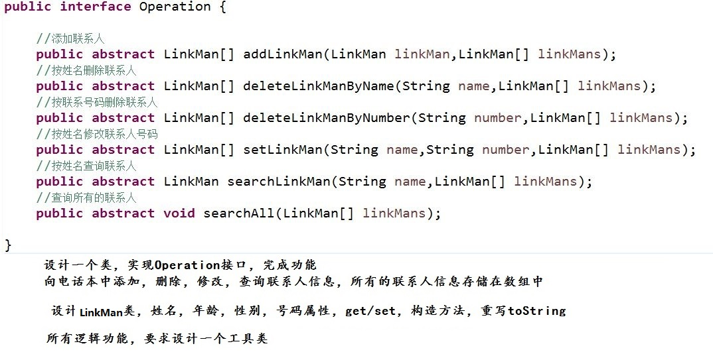

###内部类和设计模式
xxxxxxxxxx1.二维数组的理解和初始化2.二维数组的遍历方式3.异常的概念和分类4.异常的处理方式5.自定义异常
xxxxxxxxxx1.内部类1.1 成员内部类1.2 局部内部类1.3 静态内部类1.4 匿名内部类2.设计模式2.1 单例设计模式2.2 工厂设计模式
xxxxxxxxxx1.了解成员内部类、局部内部类和静态内部类的语法结构2.了解各种内部类的注意事项3.掌握匿名内部类的使用4.掌握单例设计模式的实现5.掌握工厂设计模式的实现
#####1.1 成员内部类
作为外部类的成员存在，与成员变量和成员方法平级关系。
xxxxxxxxxx1.1.1 声明：public class Out{ //成员变量 //成员方法 //成员内部类 访问权限 class In{ //成员变量 //成员方法 }}x1.1.2 语法说明:成员内部类的访问权限：任意的1.1.3 如何创建成员内部类的对象： 由于成员内部类作为外部类的成员存，若想访问类成员需要通过对象，所以成员内部类对象需要通过外部类 对象创建 语法： //创建外部类对象 Out o = new Out(); //通过外部类找到内部类，通过外部类对象创建内部类对象 Out.In i = o.new In();1.1.4 如何在成员内部类中访问外部类的成员： i.当外部类的属性和内部类属性不同名时，可以直接访问 ii.当外部类属性与内部类属性同时时，格式： 外部类名.this.属性名 通过以上格式在内部类中访问外部类的同名属性1.1.5 成员内部类的字节码文件格式： 外部类名$内部类名.class代码实现：
xxxxxxxxxxpublic class Out { //成员变量 int a = 2; //成员方法 public void fun() { System.out.println(a); } //成员内部类 public class In{ //成员内部类的成员变量 int a = 3; //成员内部类的成员方法 public void fun() { Out.this.fun(); System.out.println(a); System.out.println(Out.this.a); } }}import memberInnerClass.Out.In;public class Test { public static void main(String[] args) { //先创建外部类对象 Out o = new Out(); //System.out.println(o.a); //o.fun(); //创建成员内部类的对象 //通过外类的对象创建成员内部类对象 In i = o.new In(); //System.out.println(i.b); i.fun(); }}#####1.2 局部内部类
作为局部成员存在，和局部变量平级。
xxxxxxxxxx1.2.1 声明：public class Outer{ //成员变量 //成员方法 //局部内部类所在的方法 public void fun(){ //功能代码 //局部内部类 访问权限 class Inner{ //局部内部类的成员变量 //局部内部类的成员方法 } }}xxxxxxxxxx1.2.2 说明：局部内部类的访问权限：只能是默认1.2.3 如何创建局部内部类对象：直接在局部内部类所在的方法中创建对象并调用方法1.2.4 如何在局部内部类中访问外部类的属性：i.不同名，直接访问ii.同名，外部类名.this.属性名1.2.5 字节码文件：外部类名$编号内部类名.class
代码实现：
xxxxxxxxxxpublic class Outer { //成员变量 int a = 3; //成员方法 public void fun() { class Inner{} System.out.println("外部类的fun"); } //局部内部类所在的方法 public void fun3() { class In{} //局部内部类 class Inner{ //成员变量 int a = 10; //成员方法 public void fun() { Outer.this.fun(); System.out.println(a); System.out.println(Outer.this.a); System.out.println("局部内部类的fun方法"); } } Inner i = new Inner(); i.fun(); }}public class Test { public static void main(String[] args) { Outer o = new Outer(); //局部内部类具有作用域，所以调用外部类对象的fun3方法时会声明局部内部类并创建对象调用方法 o.fun3(); }}#####1.3 静态内部类
xxxxxxxxxxstatic关键字用法：修饰成员变量，成员方法，代码块static关键字的第四个用法，修饰内部类（有要求的）static修饰的内部类是静态内部类static只能修饰类成员static只能修饰成员内部类使用static修饰的成员内部类是静态内部1.3.1 声明：public class Out{ 访问权限 static class In{ }}xxxxxxxxxx1.3.2 说明：访问权限：任意的，一般使用public使用static修饰的成员内部类，自动提升为普通类，相当于一个独立的类1.3.3 创建对象：不需要外部类的对象，可以直接创建静态内部类的对象 格式：外部类.内部类 标识符 = new 内部类构造方法1.3.4 访问外部类的成员：只能直接访问外部类的静态成员非静态的成员只能通过创建外部类对象访问1.3.5 字节码文件格式： 外部类名$内部类名.class（与成员内部类一样）代码实现：
xxxxxxxxxxpublic class OuterClass { static String s = "hello"; int a = 10; public void fun() { System.out.println("外部类的fun"); } //静态内部类 public static class InnerClass{ int b = 20; public void fun() { System.out.println(s); System.out.println(); System.out.println("内部类的fun"); } }}import staticInnerClass.OuterClass.InnerClass;public class Test { public static void main(String[] args) { //可以不创建外部类对象，直接创建静态内部类对象 InnerClass i = new InnerClass(); i.fun(); }}#####1.4 匿名内部类
xxxxxxxxxx1.4.1 什么是匿名内部类：没有名字的内部类1.4.2 原理产生原因：由于接口和抽象类不能创建对象，若一个接口的实现类只需要使用一次，或一个抽象类的非抽象类只需要使用一次，可以使用匿名内部类，匿名内部类只能创建一个对象
代码实现：
xxxxxxxxxxpublic interface I {public abstract void fun();}public class Test{public static void main(Strng[]args){I i = new I(){public void fun(){//功能代码}};i.fun1();//使用匿名内部类的对象（接口引用）调用匿名内部类中重写的接口中的方法}}
xxxxxxxxxx1.4.3 匿名内部类的注意事项：匿名内部类中必须把抽象方法全部实现匿名内部类中可以声明独有的属性和方法，但是由于接口引用不能访问实现类中独有的属性和方法，所以一般不在匿名内部类中声明独有的方法匿名对象：若在匿名内部类中声明了独有的方法火属性，可以使用匿名对象访问，匿名对象只能使用一次
代码实现：
xxxxxxxxxxpublic static void main(String[]args){ //匿名对象调用成员方法 new I(){ public void fun(){} public void fun1(){ System.out.println("匿名内部类的fun1"); } }.fun1();//使用匿名内部类的匿名对象调用匿名内部类中独有的方法 //new Animal().eat();}xxxxxxxxxx1.4.4 匿名内部类的字节码文件格式：测试类$编号.class匿名内部类只能使用一次，即便两次声明的匿名内部类完全一致，也是两个匿名内部类
####第二节 设计模式
#####2.1 单例设计模式
xxxxxxxxxx2.1.1 什么是单例：单个实例2.1.2 单例的模式动机：在一个系统或平台中，某个类的实例（对象），只需要有一个一个朝代只能有一个皇帝，一个公司只能有一个老板2.1.3 实现原理：封装得到一个类的对象，需要通过new关键字，调用构造方法创建对象实现过程：分析：某个类只能有一个对象，但是构造方法只要一调用就会产生新的对象，可以通过封装将构造方法进行私有化；若构造方法私有化，那么此类将没有对象私有化的构造方法可以再类内部调用创建对象2.1.4 需要完成的事项：1）私有化构造方法；2）在类内创建对象；3）提供一个共有的方法，用来获取本类对象2.1.5 实现方式：单例分为懒汉式和饿汉式核心：构造方法私有：不能在类外随意创建对象在类内部声明一个本类静态的对象作为属性提供一个共有静态的方法用来获取本类对象
饿汉式代码实现：
xxxxxxxxxxpublic class Boss{ //属性 private String name; private int age; //私有化构造方法 private Boss(String name, int age){ this.name = name; this.age = age; } //私有静态本类对象作为属性 private static Boss boss = new Boss("马云",12); //提供共有静态方法获取本类对象 public static Boss getBoss(){ return boss; }}懒汉式代码实现：
xxxxxxxxxxpulbic class King{ //属性 private String name; private int age; //私有构造方法 private King(String name, int age){ this.name = name; this.age = age; } //私有静态本类对象 private static King king; //共有静态方法获取本类对象 public static King getKing(){ if(king==null){ king = new King("唐太宗",12); } return king; }}xxxxxxxxxx思考：懒汉式和饿汉式有什么区别？书写上的区别：懒汉是调用方法是初始化对象，饿汉是声明同时初始化使用上没有区别存储时：在第一次获取单例类对象前，懒汉比饿汉节省空间多线程操作时区别：懒汉式存在线程安全问题，饿汉式不存在
1.原理：多态
生活中的工厂：手机厂，电视厂，服装厂...
2.动机：
考虑一个简单的软件应用场景，一个软件系统可以提供多个外观不同的按钮（如圆形按钮、矩形按钮、菱形按钮等），这些按钮都源自同一个基类，不过在继承基类后不同的子类修改了部分属性从而使得它们可以呈现不同的外观，如果我们希望在使用这些按钮时，不需要知道这些具体按钮类的名字，只需要知道表示该按钮类的一个参数，并提供一个调用方便的方法，把该参数传入方法即可返回一个相应的按钮对象，此时，就可以使用简单工厂模式。
3.优缺点：
优点：工厂类含有必要的判断逻辑，可以决定在什么时候创建哪一个产品类的实例，客户端可以免除直接创建产品对象的责任，而仅仅“消费”产品；简单工厂模式通过这种做法实现了对责任的分割，它提供了专门的工厂类用于创建对象。
缺点：由于工厂类集中了所有产品创建逻辑，一旦不能正常工作，整个系统都要受到影响。使用简单工厂模式将会增加系统中类的个数，在一定程序上增加了系统的复杂度和理解难度。系统扩展困难，一旦添加新产品就不得不修改工厂逻辑，在产品类型较多时，有可能造成工厂逻辑过于复杂，不利于系统的扩展和维护。
4.案例： 服装厂：生产服装
分析： 需要一个服装厂类：工厂，类中具有生产服装的功能（创建服装对象） 服装类（各种）：一类服装是一个类 需要一个各类服装的父类或接口：可以表示任意类服装
xxxxxxxxxxpublic interface FuZhuang { //成员方法： public abstract void fun();}public class KuZi implements FuZhuang { public void fun() { // TODO Auto-generated method stub System.out.println("生产出一条裤子"); } public void fun1() { System.out.println("这是一条裤子"); }}public class Tshirt implements FuZhuang { public void fun() { // TODO Auto-generated method stub System.out.println("生产出一个短袖"); } public void fun2() { System.out.println("这是一件短袖"); }}public class Factory { //判断逻辑方法 public FuZhuang make(String kind) { if(kind.equals("短袖")) { return new Tshirt(); }else if(kind.equals("裤子")){ return new KuZi(); }else { return null; } }}import java.util.Scanner;public class Test { public static void main(String[] args) { //创建一个工厂对象 Factory f = new Factory(); Scanner input = new Scanner(System.in); System.out.println("你要什么衣服"); String kind = input.next(); FuZhuang fz = f.make(kind); System.out.println(fz); check(fz); } //判断一个FuZhuang引用短袖是什么并调用方法 public static void check(FuZhuang fz) { if(fz instanceof Tshirt) { Tshirt t = (Tshirt) fz; t.fun2(); }else if(fz instanceof KuZi) { KuZi kz = (KuZi)fz; kz.fun1(); }else { System.out.println("没有你要的衣服"); } }}xxxxxxxxxx
xxxxxxxxxx设计一个抽象商品类，具有名称和产地属性 非抽象食品类，继承商品类 非抽象日用品类，继承商品类设计一个工具类，判断一件商品是食品还是日用品，若是食品输出“可以食用”，若是日用品输出“不可以食用”
//要求：使用已知的变量，在控制台输出30，20，10。 class Outer { public int num = 10; class Inner { public int num = 20; public void show() { int num = 30; System.out.println(?); System.out.println(??); System.out.println(???); } } } class InnerClassTest { public static void main(String[] args) { Outer.Inner oi = new Outer().new Inner(); oi.show(); } }